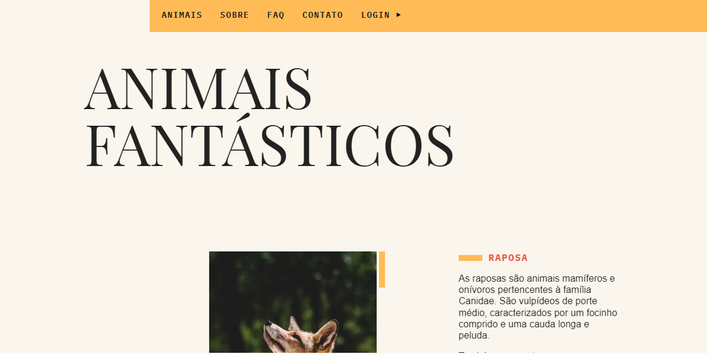
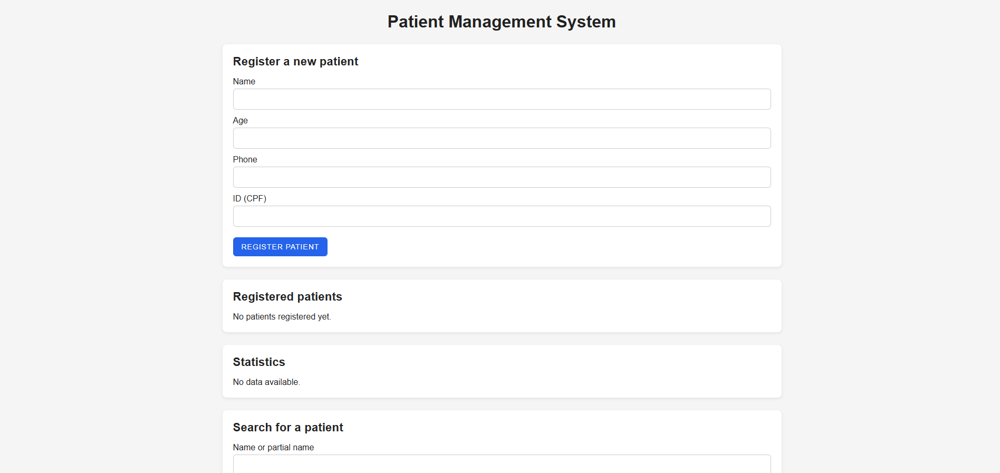
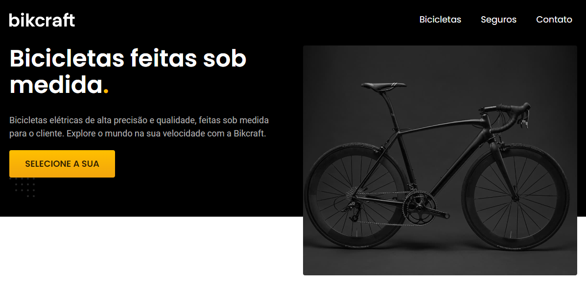
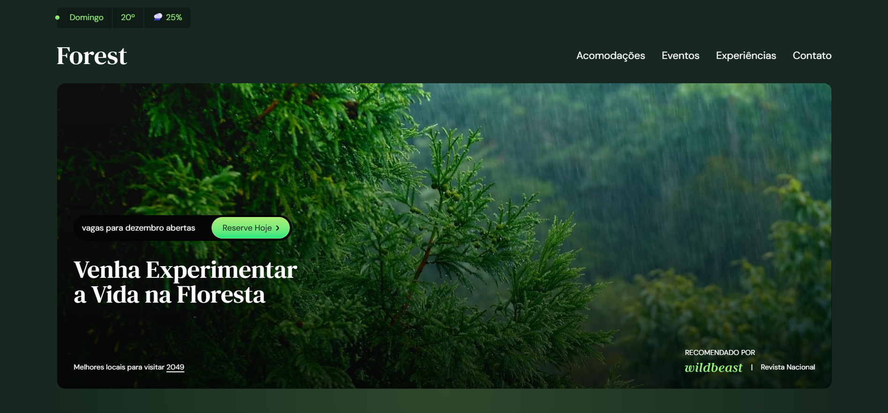
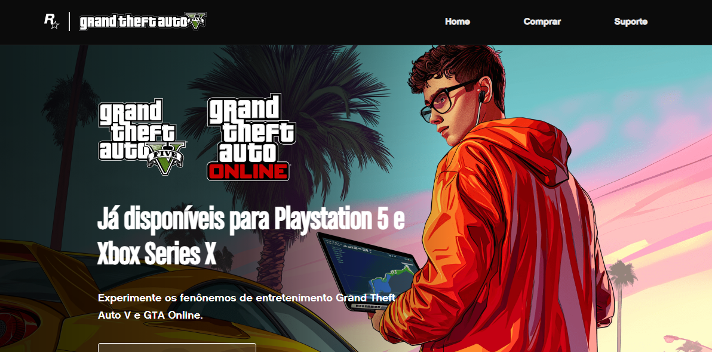
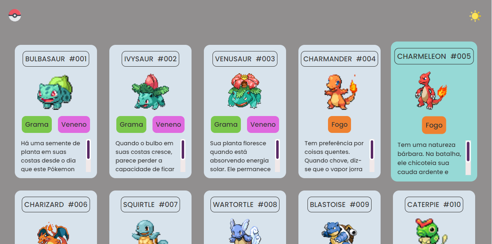
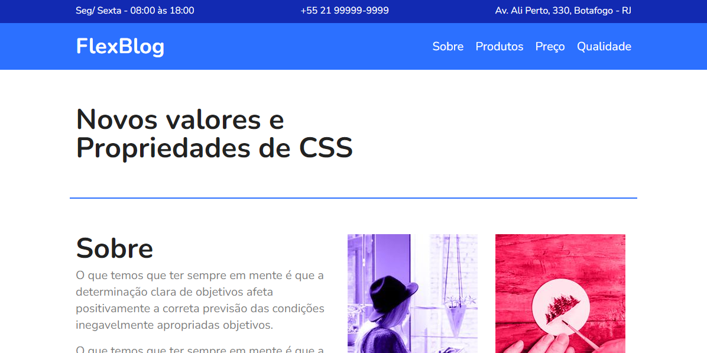
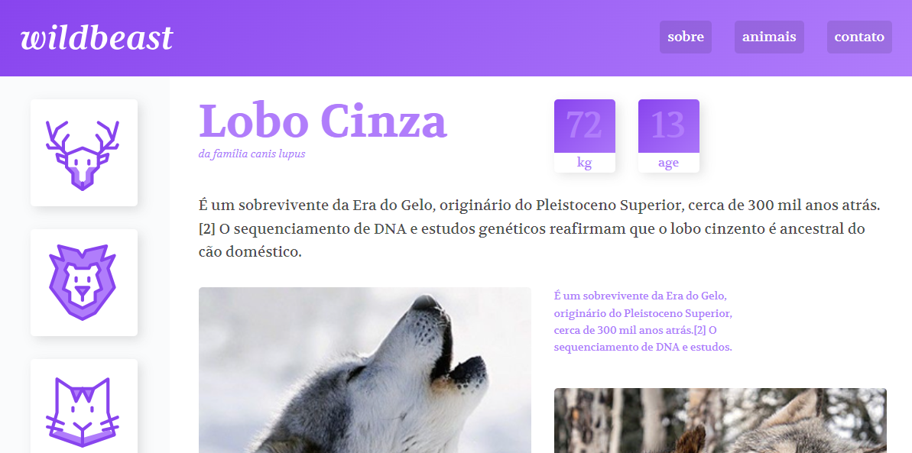

Hello, I’m Beatriz
I create clean, responsive, and user-focused web experiences.
Currently open to new projects and collaborations.
Featured Projects
A selection of my most relevant projects, showcasing JavaScript, TypeScript, and full-stack development.




Projects
I create UX/UI design and front-end projects using HTML, CSS, and JavaScript — turning ideas into responsive and interactive web experiences.
Animais Fantásticos is an interactive website built with HTML, CSS Grid, and JavaScript. The project focuses on DOM manipulation, animations, API consumption, and performance optimization, delivering a dynamic and responsive user experience.
- HTML
- CSS
- JavaScript
- Fetch API
- Promises & Async
- DOM Manipulation
- Animations & Scroll Effects
- Performance Optimization (Debounce)

Reusable slide and carousel component built from scratch with TypeScript. The project focuses on strong typing, safe DOM manipulation, and class-based architecture for scalable and maintainable front-end components.
- TypeScript
- JavaScript
- HTML
- CSS
Data-driven dashboard built with TypeScript, consuming a real API and displaying transaction statistics. The project emphasizes data normalization, modular architecture, and strongly typed logic.
- TypeScript
- JavaScript
- REST API
- HTML
- CSS
A full-stack patient management system developed with Python and Flask. It includes patient registration, search, statistics dashboard, and queue management, combining back-end logic with a responsive front-end interface.
- Python
- Flask
- HTML
- CSS
- UX/UI
Fictional e-commerce website for custom bicycles, developed from design to code. Built with HTML, CSS, and JavaScript, the project focuses on responsive design, accessibility, and user-centered interfaces.
- HTML
- CSS
- JavaScript
- UI/UX Design
- Responsive Design
- Accessibility

Responsive landing page built with HTML, CSS, and Sass. The project focuses on modular styling, reusable components, and scalable front-end architecture.
- HTML
- CSS
- Sass (SCSS)
- Responsive Design

Responsive web interface built with Tailwind CSS, applying utility-first principles. The project focuses on clean organization, custom themes, accessibility, and modern layout techniques.
- HTML
- Tailwind CSS v4
- Utility-first Design
- Responsive Layout
- Custom Themes & Colors
- Flexbox & Grid
- CSS Animations
- Best Practices & Accessibility (A11y)

Caravan is a responsive travel agency website built with HTML, CSS, and Bootstrap 4. The project focuses on using Bootstrap’s grid system, components, and utilities to create a clean, professional layout optimized for different screen sizes.
- HTML
- CSS
- Bootstrap 4
- Responsive Design
- UI Components

Interactive web interface inspired by the GTA universe. Built with HTML, CSS, and JavaScript, the project combines animations, layout, and interactivity to create an engaging browser-based experience.
- HTML
- CSS
- JavaScript
- Game Logic
- Animations
- Interactivity

Interactive and responsive web application inspired by the X-Men universe. Built with HTML, CSS, and JavaScript, the project focuses on DOM manipulation and front-end fundamentals.
- HTML
- CSS
- Flexbox
- CSS Grid
- JavaScript (ES6+)
- Responsive Design

Interactive web application inspired by the One Piece universe. Developed with HTML, CSS, and JavaScript to practice responsive layouts, animations, and dynamic user interactions.
- HTML
- CSS
- Flexbox
- CSS Grid
- JavaScript (ES6+)
- Responsive Design

Interactive web project inspired by Pokémon. Built with HTML, CSS, and JavaScript, focusing on animations, responsive design, and dynamic content handling.
- HTML
- CSS
- JavaScript
- Animations
- Responsive Design

Responsive blog layout developed using CSS Flexbox. The project focuses on clean structure, spacing, and adaptable layouts across different screen sizes.
- HTML
- CSS
- Responsive Design
- Clean Layout
- Best Practices

Responsive layout built using CSS Grid. The project demonstrates how grid systems can be used to create complex, structured, and adaptable web layouts.
- HTML
- CSS
- Responsive Design
- Semantic Structure
- Modern Layout Techniques

Corporate-style website built with HTML and CSS. The project focuses on layout design, visual hierarchy, and usability using Flexbox and Grid.
- HTML
- CSS
- Responsive Design
- UI Layout
- Usability